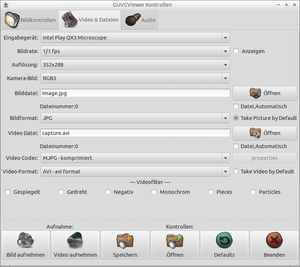

guvcview
Dieser Artikel wurde für die folgenden Ubuntu-Versionen getestet:
Ubuntu 16.04 Xenial Xerus
Ubuntu 14.04 Trusty Tahr
Zum Verständnis dieses Artikels sind folgende Seiten hilfreich:
GTK+ UVC Viewer  ist eine Anwendung, die auf luvcview basiert. Sie verwendet GTK2 und gestattet Webcams anzusteuern, die durch den UVC- oder GSPCA / SPCA5xx-Treiber
ist eine Anwendung, die auf luvcview basiert. Sie verwendet GTK2 und gestattet Webcams anzusteuern, die durch den UVC- oder GSPCA / SPCA5xx-Treiber  unterstützt werden. Die Software bietet unter anderem:
unterstützt werden. Die Software bietet unter anderem:
Bildkontrolle
Tonaufnahme (.pcm, .mp2 ...)
Videoaufzeichnung (.avi, .mkv ...) und
Bildaufnahmen in verschiedenen Formaten (.jpg, .png, .bmp und .raw)
Die unterstützten Formate sind abhängig von der verwendeten Webcam.
|  |
| Kontrollfenster |
Installation¶
Ab Lubuntu 11.04 ist das Programm bereits vorinstalliert, ansonsten installiert [1] man das folgende Paket:
guvcview (universe)
 mit apturl
mit apturl
Paketliste zum Kopieren:
sudo apt-get install guvcview
sudo aptitude install guvcview
Nach erfolgreicher Installation ist das Programm im Menü unter "Unterhaltungsmedien -> guvcview" (GNOME, LXDE) bzw. "Multimedia -> guvcview" (Xfce) zu finden.
Bedienung¶
Das Programm ist trotz der vielen Möglichkeiten übersichtlich und intuitiv zu bedienen.
| Bedienung | |
| Menüpunkt | Beschreibung |
| "Bild aufnehmen" | Einzelbild erstellen - Formate et cetera sind konfigurierbar |
| "Video aufnehmen" | Videoaufnahme im gewünschten Format starten und beenden |
| "Speichern", "Öffnen" | Einstellungen speichern / laden |
| "Defaults" | Auf Voreinstellungen zurücksetzen |
Externe Anwendungen¶
Möchte man Guvcview mit einer externen Anwendung (z.B. Cheese, MPlayer oder Skype) verwenden, kann man das Bildkontrollfenster separat aufrufen [2]:
guvcview --control_only
Die Einstellungen werden von den externen Programmen übernommen. Ein Liste aller Optionen findet man in der Manpage des Programms.
Konfiguration¶
Die Schnittstelle ermöglicht den Zugriff auf viele Einstellungen. Die Standardwerte sind im Allgemeinen gut gewählt und bedürfen keiner Änderung.
| Konfiguration | |
| Reiter | Beschreibung |
| "Bildkontrollen" | Helligkeit, Kontrast, Gamma und Schärfe einstellen |
| "Video & Dateien" | Auflösung, Bild-/Videoformate ändern, Speicherpfade, Spezialeffekte einstellen |
| "Audio" | Audioformat, Toneffekte, Eingabegerät, Kanäle, usw. anpassen |
Alle Einstellungen werden in der Datei .config/guvcviewrc/videoN im Homeverzeichnis abgelegt, wobei videoN dem Device entspricht (video0, video1 usw.).
 Übersichtsartikel
Übersichtsartikel- Erstellt mit Inyoka
-
 2004 – 2017 ubuntuusers.de • Einige Rechte vorbehalten
2004 – 2017 ubuntuusers.de • Einige Rechte vorbehalten
Lizenz • Kontakt • Datenschutz • Impressum • Serverstatus -
Serverhousing gespendet von